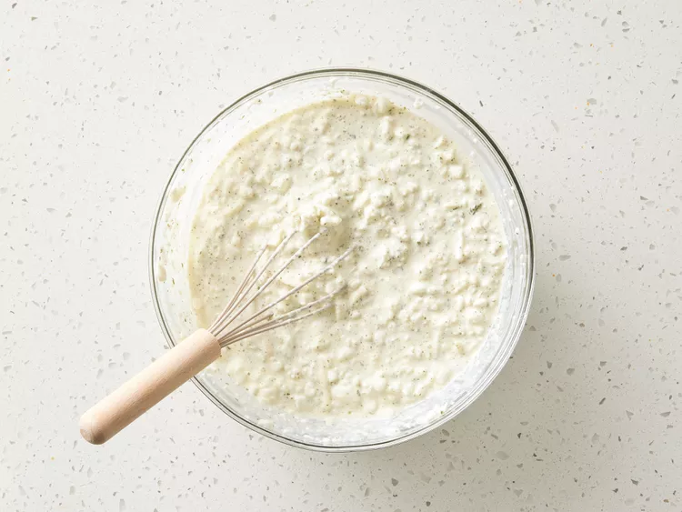
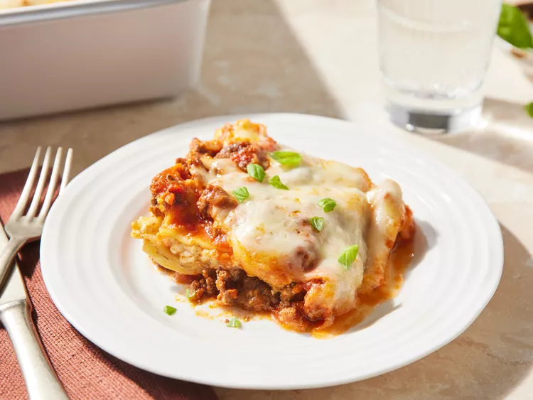

An easy lasagna recipe that saves me lots of time. This dish satisfies everyone in the family. Try it tonight!

Making perfect homemade lasagna doesn’t have to be tedious. This top-rated easy lasagna recipe comes together quickly with a relatively short ingredient list.
You’ll find the full, step-by-step recipe below — but here’s a brief overview of what you can expect when you make homemade easy lasagna:
For mouthwatering serving inspiration, explore our collection of Easy Side Dishes for Lasagna. Here are a few of the recipes you'll find:
Store the cooked lasagna in an airtight container in the refrigerator for up to five days. To reheat, cover the leftovers with foil and bake at 350 degrees F for about half an hour, or until the lasagna is heated through and the sauce is bubbly.
To freeze, wrap the lasagna in at least one layer of storage wrap and at least one layer of aluminum foil. Freeze for up to three months. Thaw the frozen lasagna in the refrigerator overnight, then follow the reheating instructions above.
“Amazing recipe,” raves one Allrecipes community member. “Loved the simplicity. [I] was able to use gluten-free Barilla noodles and lactose-free cottage cheese to suit our dietary needs. Superb!”
“I have made this recipe many, many times and it always turns out PERFECT,” according to Mike Weiner. “It’s easy, it’s fun to prepare, and whatever is leftover saves well, so I get multiple meals from it! I share this recipe all the time and it will always be my go-to lasagna!”
“Love this recipe,” says Juanita Garcia Wolff. “The only thing I changed to make it even more easier: I used oven-ready lasagna pasta and I did not add the water.”
Editorial contributions by Corey Williams
Step 1

Gather all ingredients and preheat the oven to 350 degrees F (175 degrees C).
Step 2

Heat a large skillet over medium-high heat. Cook and stir ground beef in the hot skillet until browned and crumbly, 8 to 10 minutes. Drain and discard grease. Stir in spaghetti sauce and simmer for 5 minutes.
Step 3
Combine cottage cheese, 2 cups of mozzarella cheese, eggs, 1/2 of the grated Parmesan cheese, dried parsley, salt, and pepper in a large bowl.
Step 4
Spread 3/4 cup of sauce in a 9x13-inch baking dish. Cover with 3 uncooked lasagna noodles, 1 3/4 cups of cheese mixture, and 1/4 cup sauce; repeat layers once more. Top with remaining 3 noodles, sauce, mozzarella, and Parmesan cheese. Pour 1/2 cup water along the edges of the dish. Cover tightly with aluminum foil.
Step 5

Bake in the preheated oven for 45 minutes. Uncover and bake for an additional 10 minutes. Let stand 10 minutes before serving.
Step 6
Serve and enjoy!